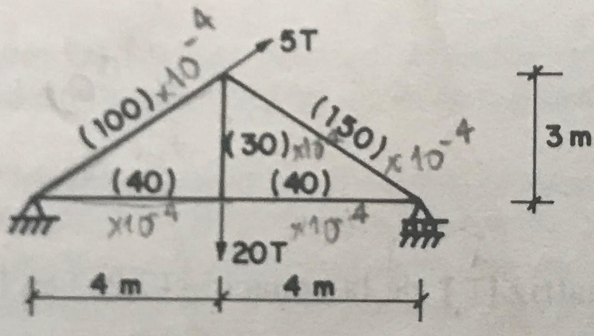

## pyFEM ### plane truss example Cristian Danilo Ramírez Vargas
## Contents - Clonar el repositorio pyFEM - Problem - Model problem with pyFEM - Comparate Solution
## Clonar el repositorio pyFEM
## Git 1. Abrir la termina 2. Cambiar el directorio actual donde quieres guardar tu copia de pyFEM 3. Clonar el repositorio <pre><code data-trim> $ git clone https://github.com/rvcristiand/pyFEM.git </code></pre>
## Git 4. Cambiar el directorio actual a pyFEM <pre><code data-trim> $ cd pyFEM </code></pre> 5. Cambiar a una versión anterior de pyFEM <pre><code data-trim> $ git checkout 1150de505f86ffb2f407fd881d66eef26021651a </code></pre>
## Problem _Escamilla, Jairo. Microcomputadores en ingeniería estructural. Santa fé de Bogotá: ECOE Universidad Nacional de Colombia. Facultad de Ingeniería, 1995_
## Problem's description _Ejemplo 7.1 - Resuelva completamente la cercha mostrada por el método matricial de los desplazamientos. El material es acero estructural con E=2040 tonf/cm2. Las áreas están dadas entre paréntesis en cm2._
## Problem's description 
## Model problem with pyFEM
## pyCharm Abrir la carpeta pyFEM
## pyCharm Crear un nuevo archivo de python en la carpeta _/test_
## pyCharm De la libreria pyFEM importe la clase Structure <pre><code data-trim> from pyFEM.core import Structure </code></pre>
## pyCharm Cree un nuevo modelo <pre><code data-trim> structure = Structure() </code></pre>
## pyCharm Agregue un nuevo material al modelo <pre><code data-trim> structure.materials.add("material1", 2040e4) </code></pre>
## pyCharm Agregue nuevas secciones al modelo <pre><code data-trim> structure.sections.add("section1", "material1", 30e-4) structure.sections.add("section2", "material1", 40e-4) structure.sections.add("section3", "material1", 100e-4) structure.sections.add("section4", "material1", 150e-4) </code></pre>
## pyCharm Agregue nuevos nudos al modelo <pre><code data-trim> structure.nodes.add('1', 0, 0, 0) structure.nodes.add('2', 8, 0, 0) structure.nodes.add('3', 4, 3, 0) structure.nodes.add('4', 4, 0, 0) </code></pre>
## pyCharm Agregue nuevos elementos tipo cercha al modelo <pre><code data-trim> structure.trusses.add('1-3', '1', '3', "section3") structure.trusses.add('1-4', '1', '4', "section2") structure.trusses.add('3-2', '3', '2', "section4") structure.trusses.add('4-2', '4', '2', "section2") structure.trusses.add('4-3', '4', '3', "section1") </code></pre>
## pyCharm Agregue nuevos apoyos al modelo <pre><code data-trim> structure.supports.add('1', True, True, True) structure.supports.add('2', False, True, True) structure.supports.add('3', False, False, True) structure.supports.add('4', False, False, True) </code></pre>
## pyCharm Agregue nuveas cargas al patrón de carga del modelo <pre><code data-trim> structure.load_patterns.add("point loads") </code></pre>
## pyCharm Agregue un nuevo patrón de carga al modelo <pre><code data-trim> structure.load_patterns["point loads"].point_loads.add('4', 0, -20, 0) structure.load_patterns["point loads"].point_loads.add('3', 5 * 0.8, 5 * 0.6, 0) </code></pre>
## pyCharm Solucionar el modelo <pre><code data-trim> structure.solve() </code></pre>
## Comparate solution
## pyCharm Obtener los desplazamientos de los nudos <pre><code data-trim> for node in structure.nodes: print("node {}".format(node.label)) for displacement in node.displacements: print(displacement) </code></pre>
## pyCharm Obtener las reacciones en los apoyos <pre><code data-trim> for support in structure.supports: print("support {}".format(support.label)) for reaction in support.reactions: print(reaction) </code></pre>
## pyCharm Obtener las fuerzas internas en los elementos <pre><code data-trim> for truss in structure.trusses: print("truss {}".format(truss.label)) for load_pattern in structure.load_patterns: print("load pattern: {}".format(load_pattern.label)) print(truss.get_forces(load_pattern.label)) </code></pre>
# Thank you!